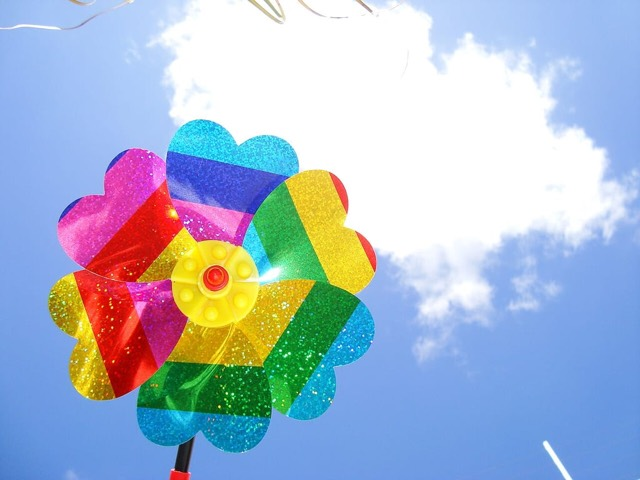
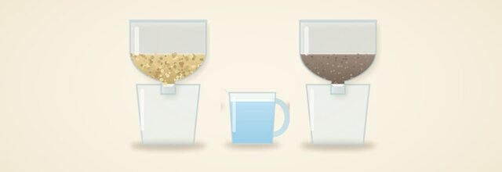
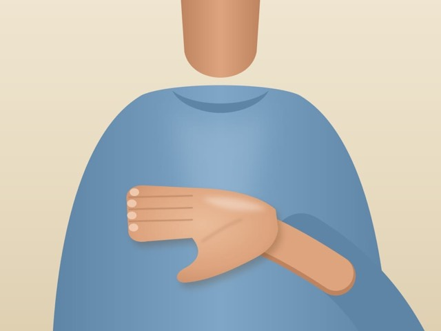
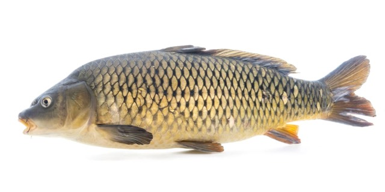
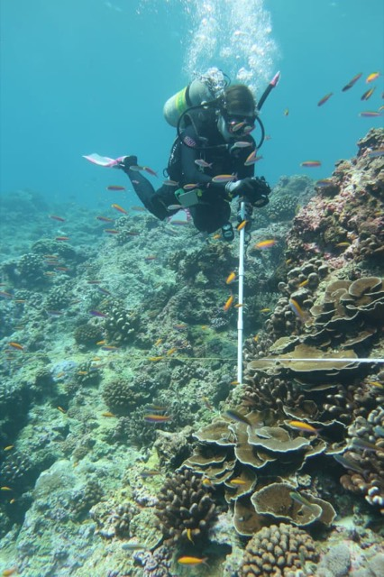
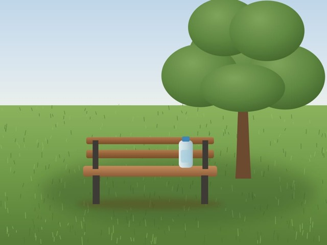
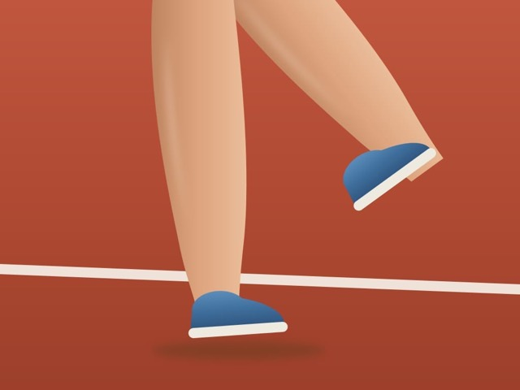
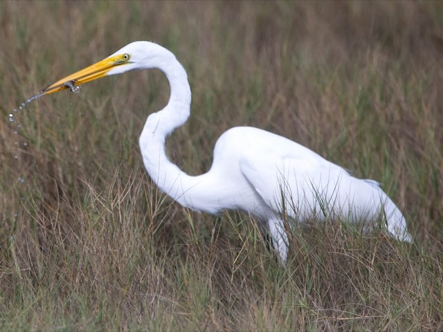
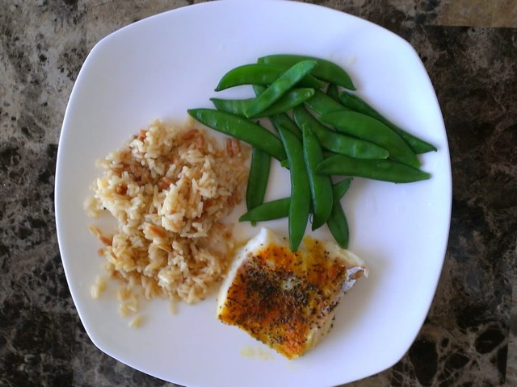

Quiz Đợt 1 · SK-047
← Về trang so sánh · Discoverer-A2 · Explorer-A · Ticket docs/backlog/SK-047-quiz-system-wave-1.md · Đề xuất docs/quiz-system-proposal.md mục 4.3, 4.6, 4.9, 5
Designer, 15/11. Chỉ thiết kế, chưa code, chưa sửa nội dung. Mọi màn dựng lại từ thành phần, token và chữ của bộ A2 "Sách tranh" Duy duyệt 14/11 (CSS chép nguyên từ Discoverer-A2.html), không thêm style mới. Nội dung và ảnh là của bài thật, lấy từ gói nhúng content/.build/pack (ảnh thu nhỏ trong img/, tiền tố hh1-, hh3-, dd8-, dd14-, x6-, x8-); không ảnh AI, không ảnh mới. Mở một khung riêng bằng ?shot=<id> (id in dưới mỗi khung).
Duy cần chốt trước khi ios-dev dựng Tổng kết
- Tổng kết Discoverer, Màn 1: A · ba thẻ một trang (khuyến nghị) hay B · thẻ lớn và hàng thẻ nhỏ.
- Tổng kết Discoverer, Màn 2: A · một tấm giấy hai phần, ý sai trên, ý đúng dưới (khuyến nghị) hay B · hai tờ đặt cạnh nhau.
- Tổng kết Explorer: Màn 1 A (khuyến nghị) / B; Màn 2 A · in hai câu (khuyến nghị) / B · chữ chỉ trong bong bóng.
- "Na nói đúng" bằng huy hiệu gật, không thêm chữ (r-d2-a-nod), như PM đề xuất.
Designer đã quyết (Duy đổi được): cột biểu đồ vẽ bằng khối đếm được khi giá trị nguyên ≤ 10; hình thẻ ý chính ghép theo chữ thay vì theo thứ tự; nút gợi ý ẩn khi câu đã xong; ở câu Na nút gợi ý nằm dưới nút nghe. Không có chuỗi nào phải thu giọng mới.
Tổng kết dùng lại gì của A2
- Header không chữ: nút thoát + 4 ô bước đã xong. Tên màn ("Em đã học", "Nhớ nhé") chỉ là tiêu đề ẩn cho VoiceOver, không in, không đọc.
- Thanh trang 2 ô và hàng nút như trang Học (Màn 2 có "trang trước").
- Thẻ giấy bo 10 (Explorer 20), loa 56 (Explorer 72 gỉ đồng), nút VI ở "Cả hai", triện lá tre, vàng hoè cho phần đang đọc, mặt Na và hình gật/lắc có sẵn.
- Mọi chữ trên màn là nội dung có sẵn:
key_points,statement/promptcâu 6,explanation_correct, từ vựng,objective. Nhãn "Từ mới" là chuỗi app đã có.
Không làm ở Đợt 1
- Dấu tích và dòng "xem lại" theo kết quả Quiz (khung r-d1-dot2 chỉ minh hoạ chỗ chừa cho Đợt 2).
claim_check,key_point_images, bé tự đánh giá.- Màn Scientist riêng: Scientist dùng màn Discoverer.
Nút gợi ý (Discoverer; Scientist dùng chung)
Nút gợi ý làm gì
- Có ở: Discoverer và Scientist, mọi dạng câu (SC, MC, TF, câu Na, FB, OS, biểu đồ), cả Khởi động lẫn Quiz. Explorer không có (gợi ý đã tự đọc khi sai). Câu không có
hintthì không có nút. - Vị trí: chỉ biểu tượng, ngay trái nút nghe, cùng cỡ 56:
[câu hỏi] [gợi ý] [nghe]. Ở câu Na: ngay dưới nút nghe (h-na-open). - Chạm khi câu chưa xong: đĩa đổi sang vàng hoè, mẩu giấy gợi ý đặt xuống dưới câu hỏi, app đọc
hinttheovoice_mode("Cả hai": in EN, nút VI đọc VI). Ghihint_used = true. Vẫn được điểm (mặc định 15/11). - Chạm lại: đọc lại gợi ý. Không đóng mẩu giấy.
- Sai còn lượt: nút vẫn chạm được; app tự đọc
hintsaufeedbacknhư A2, việc này không tínhhint_used. - Câu đã xong (đúng hoặc hết lượt): nút ẩn, giữ chỗ (câu hỏi không chạy lại), không chạm được, VoiceOver bỏ qua. Lý do không làm mờ: bé 7–9 tuổi thấy nút mờ sẽ chạm thử và tưởng app hỏng; sau khi chấm, lời giải thích đã thay vai trò của gợi ý. Mẩu giấy gợi ý đã mở thì vẫn nằm đó.
- Học tiếp lượt dở: câu đã mở gợi ý (có
hint_used) mở lại thì mẩu giấy hiện sẵn, nút ở trạng thái đã mở.
Dưới biển, thợ lặn lúc nào cũng cần thứ gì?
ho-hap/01 q4, chế độ Tiếng Việt. Nút gợi ý (bóng đèn, không chữ) đứng ngay trái nút nghe, cùng cỡ 56, cùng đĩa diệp. Câu hỏi hẹp lại 66 pt nên câu 10 chữ xuống 3 dòng.Cỡ: nút 56 (chạm Discoverer), cách nút nghe 8; hàng câu hỏi [chữ] [gợi ý] [nghe]; chữ câu hỏi giữ như hiện tại.Token: đĩa cùng màu đĩa của
ListenButton (diệp), hình text_primary. Biểu tượng mới PaperIcon.hint: bóng đèn hộp 24 (thân + đuôi hai khấc + 5 tia, đều là hình đặc; vệt sáng khoét bằng màu đĩa), vẽ ở 1,1× để nặng bằng hình loa. Path trong Quiz-Dot1.html (hằng BULB trong mã nguồn trang).VoiceOver: "Gợi ý" (
lesson.hint.button); thứ tự đọc theo màn: câu hỏi, Gợi ý, Nghe câu hỏi.Giảm chuyển động: không có chuyển động riêng; nhấn chỉ lún 3 như mọi nút (
e-press).?shot=h-sc-askDưới biển, thợ lặn lúc nào cũng cần thứ gì?
Em nhớ lại thợ lặn ở ô Khí ô-xi nhé.
hint. Mẩu giấy không gấp góc (gấp góc là dấu sai còn lượt của A2), đầu có ô vàng hoè lặp lại bóng đèn để bé nối nút với giấy. Ghi hint_used = true.Chạm lần nữa: đọc lại gợi ý (nút đã bật là nút nghe của mẩu giấy; mẩu giấy không có loa riêng). Không đóng lại được.Cỡ: mẩu giấy rộng hết cột, đệm 9/10, ô bóng đèn 36 (bo 3, nghiêng −4°), chữ
typography.item_title 16/700 text_primary (chốt 15/11; bản đầu vẽ 18/600), bo 10, bóng paper_3.Token: nút bật
state_selected (vàng hoè); giấy surface_paper.VoiceOver: nút "Gợi ý", giá trị "Đã mở" (
lesson.hint.opened_a11y); mẩu giấy đọc nguyên văn hint, có traits .isStaticText, đứng sau câu hỏi.Chuyển động: mẩu giấy
lay (460 ms) rồi thẻ bên dưới dịch xuống cùng lúc; giảm chuyển động: hiện ngay, thẻ nhảy chỗ không trượt.Sai còn lượt sau khi đã mở: mẩu giấy gấp góc của A2 vẫn in
feedback; nếu lựa chọn không có feedback thì không in thêm mẩu gấp góc (gợi ý đã nằm trên màn), giọng vẫn đọc gợi ý.?shot=h-sc-openCá thở dưới nước bằng .
Em nhớ lại ô Con vật ở phần Học nhé.
ho-hap/01 q2. Nút gợi ý nằm trong tấm giấy câu, trái nút nghe, như hàng câu hỏi thường. Mẩu gợi ý đặt dưới tấm giấy câu, trên kho từ. Kho từ đã xáo (SK-047 việc 1).Cỡ: chữ câu còn ~190 pt khi có hai nút; câu FB dài nhất hiện có (≤ 12 chữ) vẫn 3 dòng.Khác: như
h-sc-open.?shot=h-fill-open

Em nhớ lại cửa kính lạnh, và nghĩ về khí ô-xi nhé.
ho-hap/01 q6. Hàng lời Na đã có mặt Na 56 và nút nghe 56; thêm một nút nữa trong hàng thì bong bóng còn ~150 pt (5 dòng). Nên ở câu Na, nút gợi ý đứng ngay dưới nút nghe (cột 120 pt, bằng bong bóng 3 dòng). Đây là ngoại lệ duy nhất của vị trí "trái nút nghe".Một lượt: TF vẫn 1 lượt (SK-043 điểm 6). Mở gợi ý trước khi trả lời vẫn được điểm (mặc định 15/11), chỉ ghi hint_used.Cỡ: cột
[nghe 56][8][gợi ý 56]; "Cả hai": [nghe][VI 34][gợi ý] = 158 pt, bong bóng vẫn 3 dòng EN.Nội dung:
hint của 40 câu Na sẽ được content-editor rà (SK-047 việc 5) để không lộ đáp án.?shot=h-na-openWhich soil let the most water through?
Remember the Results picture.

chế độ Cả hai
picture_bar_chart · đã mở gợi ý ("Cả hai")Bàida-va-dat/14 q4. "Cả hai": câu hỏi và gợi ý in EN; nút VI dưới nút nghe đọc câu hỏi tiếng Việt, nút VI trên mẩu giấy đọc gợi ý tiếng Việt. Câu hỏi là nháp trong SK-047.Cỡ: nút VI 56×34 ở đầu phải mẩu giấy, canh giữa theo chiều dọc.?shot=h-chart-openorder_sequence: mũi tên, khoá thẻ đúng chỗ, 2 hàng
Ba thay đổi
- Mũi tên giữa mọi chỗ (Explorer-A đã có; Discoverer dùng chung component).
- Thử lại giữ phần đúng: chỗ nào khớp
answerthì thẻ khoá lại (lớp lá tre lệch + triện tích, như thẻ đúng của A2; không nét viền), thẻ sai chỗ về kho và chạm lại được. Chấm không đổi. - iPhone, từ 4 thẻ: chỗ xếp 2 hàng; một dải giấy gấp khúc nối cuối hàng 1 về đầu hàng 2. iPad luôn một hàng.
Vỏ ốc thành hoá thạch ra sao?
da-va-dat/08 q4. Bốn chỗ xếp 2 hàng × 2, mũi tên giữa hai chỗ trong hàng, và một dải giấy gấp khúc nối từ chỗ 2 (cuối hàng 1) về chỗ 3 (đầu hàng 2), đọc như chữ xuống dòng. Kho thẻ một hàng 4 thẻ ở dưới; thứ tự kho đã xáo và không bao giờ trùng answer.Khi nào 2 hàng: iPhone (compact) và ≥ 4 thẻ. 4 thẻ: 2 + 2; 5 thẻ: 3 + 2 (chỗ 70–80, vẫn ≥ 56). 3 thẻ: một hàng như Explorer-A. iPad: luôn một hàng (o-ipad).Cỡ: chỗ vuông 116 (khung ảnh
order_item 1:1), bo 10; ô mũi tên 44; dải nối cao 31, dày 5, màu text_secondary, là hình đặc (không nét); mũi tên giữa chỗ 22 text_secondary. Thẻ kho 4 cột cao 104.Token: dải
surface_sunken, chỗ trống surface_inactive + shadow.sunken, số chỗ trống giay_lom_deep (trang trí, như code), số trên thẻ đã đặt nền text_primary.VoiceOver: giữ
lesson.explorer.order.place_empty "Chỗ 3, trống", place_filled; dải nối và mũi tên ẩn.Chuyển động: thẻ đặt vào chỗ
pop; giảm chuyển động: hiện ngay.?shot=o-d-askVỏ ốc thành hoá thạch ra sao?

Em tìm bước đầu tiên, rồi bước tiếp theo nhé.
hint (OS không có feedback).Hành vi: thẻ khoá không chạm, không kéo ra, không nhận thả (thả thẻ khác lên chỗ khoá: thẻ đó về kho). Bé chạm thẻ kho → vào chỗ trống đầu tiên còn trống (chỗ 2 rồi 3). Đủ chỗ thì tự chấm; lần thử gửi đủ {"order": [...]}.Khác A2
d-order-retry: A2 vẽ thẻ trả về bị bong góc; ở đây thẻ trả về không bong góc, vì nó vẫn có thể đúng ở chỗ khác.Token: lớp dưới
shadow.offset_correct (lá tre 5,6), triện Seal(icon: .check, tone: .correct) 28.VoiceOver: chỗ khoá "Chỗ 1: con ốc nằm trên đáy biển, đúng chỗ, đã khoá" (giá trị mới
lesson.order.locked_a11y), không có hint "chạm để bỏ ra".Chuyển động: triện
stamp trên thẻ khoá; thẻ sai trượt về kho (slide, 360 ms). Giảm chuyển động: triện hiện ngay, thẻ biến khỏi chỗ và hiện ở kho, không bay.?shot=o-d-retry 123
123goi-ten-va-nhom-dong-vat/04 q4. Bé xếp trứng, ếch, nòng nọc: trứng đúng chỗ 1 nên khoá (lớp lá tre + triện), ếch và nòng nọc về kho. Linh vật đọc gợi ý trong bong bóng như Explorer-A. Mũi tên giữa các chỗ đã có ở Explorer-A, giữ nguyên. Explorer không có nút gợi ý.Cỡ: như Explorer-A: chỗ 96 bo 18, thẻ kho cao 150 bo 20; triện 28.Ghi chú: các ô Explorer bo 18–22; thẻ khoá dùng cùng lớp lá tre lệch và triện như Discoverer.?shot=o-x-retry
Vỏ ốc thành hoá thạch ra sao?
Em tìm bước đầu tiên, rồi bước tiếp theo nhé.
min(160, (rộng khung − 2·14 − (n−1)·36) / n).?shot=o-ipadpicture_bar_chart: tên cột luôn hiện, khối đếm được
Quyết định khối đếm được: có
- Luật: mọi
bars[].valuelà số nguyên và lớn nhất ≤ 10 → mỗi đơn vị là một khối giấy; còn lại → cột liền như A2. Cả biểu đồ một kiểu. - Vì sao: (1) khi hai cột gần bằng nhau (5 và 6), cột liền chỉ cho bé ước bằng mắt, khối cho bé đếm; (2) biểu đồ khối là dạng trẻ lớp 2–3 đã gặp ở môn Toán, đúng tầm Discoverer, và là bước đệm cho câu "bao nhiêu" của Đợt 3 mà không phải vẽ lại; (3) hợp style E: khối là mảnh giấy cắt chồng lên nhau, không cần trục số hay chữ số nên vẫn giữ luật ít chữ; (4) không đổi schema, chỉ là cách vẽ từ
value. - Giá phải trả: hai kiểu vẽ trong app (khối và cột liền); chồng 10 khối mỏng hơn (≈ 17 pt mỗi khối).
- Đề xuất cho content-editor (không chặn): khi dữ liệu là số nguyên, chọn đơn vị đếm được, ví dụ "cốc nước hứng được trong một phút", để mỗi khối có nghĩa; bài 14 hiện ghi "nước hứng được trong một phút". Ảnh câu hỏi bài 14 (nắm đất cát) lộ đáp án khi câu hỏi đổi sang "Which soil let the most water through?": đề xuất dùng ảnh
explore_setupcó sẵn của bài.
Which soil let the most water through?
câu hỏi: nháp trong SK-047, content-editor chốtchế độ Cả hai
picture_bar_chart · tên cột hiện ngay, cột bằng khối đếm đượcBàida-va-dat/14 q4 (vườn 6, cát 9, sét 2). Tên ba cột in ngay khi mở câu ("Cả hai": in EN). Mỗi giá trị nguyên là một khối giấy chàm; bé so được bằng mắt và bằng cách đếm. Câu hỏi đổi sang hỏi dữ liệu (SK-047 việc 3 của content-editor). Ảnh câu hỏi đổi từ "nắm đất cát" (lộ đáp án khi hỏi "đất nào cho nhiều nước qua nhất") sang ảnh explore_setup có sẵn của bài: đề xuất cho content-editor, chưa sửa nội dung.Rà 16/11 (designer): khung ảnh trên câu biểu đồ rộng ~3,0–3,6:1 (cao 120, ảnh 104; 329×104 trên iPhone 390, 379×104 Pro Max, 523×164 iPad). Ảnh 4:3 explore_setup lệch ×2,4, quá ngưỡng 2,2 của PictureFit, nên app vẽ cả ảnh nhỏ giữa giấy lõm. Nội dung nay có mục ảnh riêng q4 = own/da-va-dat/b14-q4-chart.jpg, dải 1024×352 (≈ 2,9:1): cùng hai chai và ca nước, xếp một hàng, lấp đầy khung. Không đổi code. Câu biểu đồ sau này cũng dùng ảnh dải ~3:1.Luật vẽ khối: mọi bars[].value là số nguyên và giá trị lớn nhất ≤ 10 → khối; còn lại → cột liền như hiện tại. Áp cho cả biểu đồ, không trộn hai kiểu trong một câu.Cỡ khối: cao
min(28, (H − (max−1)·3) / max), H = chartHeight 200, khe 3; rộng = rộng cột (≈ 72 trên iPhone, 3 cột). Bo radius.tag 3, bóng paper_1; khối lẻ lệch −1 pt cho ra giấy cắt tay. Chân trục text_primary cao 8.Tên cột:
bars[i].label (theo mode.sentence), 15/700 text_primary, tối đa 2 dòng, luôn hiện; bỏ .opacity(…) ở DiscovererQuestionStep.swift dòng 284–285. Không in số, không in trục số.VoiceOver: giữ "tên, giá trị, đơn vị" của từng cột (đã có). Tên hiện sẵn nên nhãn không đổi.
Chuyển động: chồng khối mọc lên (
grow, từng cột cách 40 ms); giảm chuyển động: hiện ngay.?shot=c-askWhich soil let the most water through?
Which soil let the most water through?
This medium bar shows only some water got through.
feedback của lựa chọn. Nút gợi ý vẫn ở đó vì câu chưa xong.Token: khối đã thử feedback_wrong (giấy lõm) + bóng sunken_s; góc gấp 16 trên khối trên cùng, lớp gấp giay_lom_deep.?shot=c-retryWhich soil let the most water through?
In one minute, the most water ran through sand.
Tổng kết · Discoverer · Màn 1 "Em đã học"
Màn 1 · cách đọc
- Mở màn: đọc lần lượt 3 ý chính (Discoverer và Explorer; Scientist không tự đọc). Thẻ đang đọc nổi lên; giảm chuyển động thì chỉ hiện lớp vàng hoè.
- Mũi tên chạm bất cứ lúc nào: giọng dừng, sang Màn 2. Không chấm gì ở đây.
- Hình mỗi thẻ: hình nhóm Học ghép theo chữ với ý chính (xem mục Hình thẻ ý chính), không theo thứ tự.
Em đã học

We breathe in and out, even when we sleep.

People and animals breathe, even fish in water.

Our body takes oxygen from the air we breathe.
khuyến nghịchế độ Cả hai≈ 26 từ EN
Màn 1 "Em đã học" · phương án A · ba thẻ một trangABàiho-hap/01, đang đọc ý 2. Ba thẻ ngang, mỗi thẻ: hình vuông 136 bên trái, câu ý chính, hàng nút [VI][nghe] ở góc dưới phải. Thẻ đang đọc nổi lên 4 pt với lớp vàng hoè lệch dưới (vàng hoè = đang ở đây). Không tiêu đề chữ: header chỉ có nút thoát và 4 ô bước đã xong.Ưu: thấy cả bài một lúc (đúng mục đích "bức tranh chung"), nghe lại ý nào cũng một chạm, Đợt 2 thêm dấu và dòng xem lại vào đúng thẻ mà không phải vẽ lại. Nhược: hình nhỏ hơn trang Học (136 so với 350), cả ba câu cùng hiện nên màn nhiều chữ hơn B.Cỡ: thẻ bo 10, đệm 8, khe 14; hình 136 × (≥ 136), khớp khung
learn_group 1:1 nên không cần cắt lại; câu typography.item_title 16/700 text_primary (chốt 15/11; bản đầu vẽ 18/600), tối đa 4 dòng; nút nghe 56, VI 56×34 (chỉ "Cả hai").Nổi lên:
offset y −4 + shadow.offset_accent (vàng hoè 5,6) + bóng sâu hơn, chuyển 220 ms. Giảm chuyển động: không dịch, lớp vàng hoè hiện/tắt ngay (ticket: "chỉ đổi nền").Đọc: mở màn là đọc lần lượt ý 1 → 3 (Explorer, Discoverer; Scientist không tự đọc). Chạm loa một thẻ: dừng chuỗi, đọc thẻ đó, thẻ đó nổi lên. Dưới VoiceOver không tự đọc.
VoiceOver: tiêu đề ẩn "Em đã học" (
lesson.recap.learned_a11y, chỉ VoiceOver); mỗi thẻ là nhóm "Ý 2 trên 3" (lesson.recap.key_point_a11y), rồi câu, nút "Nghe ý này" (lesson.listen.key_point). Hình đọc alt của nhóm Học.Mũi tên: sang Màn 2 ngay, giọng dừng. Không có nút "trang trước" ở Màn 1 (Quiz đã xong, không lùi về).?shot=r-d1-a
Em đã học
People and animals breathe, even fish in water.
chế độ Cả hai≈ 8 từ EN mỗi lúc
Màn 1 · phương án B · thẻ lớn và hàng thẻ nhỏBÝ đang đọc chiếm thẻ lớn (hình 236 cao, câu, loa); ba ý cũng là ba thẻ nhỏ ở dưới, thẻ đang đọc nổi lên. Đọc xong ý 2 thì thẻ lớn đổi sang ý 3. Chạm thẻ nhỏ để nghe và xem ý đó.Ưu: hình to như trang Học, mỗi lúc một ý, ít chữ trên màn. Nhược: không thấy ba câu cùng lúc; màn đổi khi giọng sang ý mới (thêm chuyển động); bé bấm qua sớm thì chỉ thấy ý 1. Đợt 2: dấu tích đặt được trên thẻ nhỏ, nhưng dòng xem lại chỉ thấy khi tới ý đó.Cỡ: hình lớn 334 × 236 (cắt từ 1:1, mất ~30%), thẻ nhỏ 3 cột cao 84.
Giảm chuyển động: thẻ lớn đổi bằng mờ dần, không trượt.?shot=r-d1-b
Em đã học
Khi em chạy nhảy, em thở nhanh hơn.

Khi em nghỉ, hơi thở chậm lại như cũ.

Cơ bắp khi vận động cần nhiều ô-xi hơn, nên em thở nhanh hơn.
chế độ Tiếng Việt
Màn 1 · A · chữ dài nhất (Tiếng Việt, bài ho-hap/03)Bàiho-hap/03, đang đọc ý 3: câu dài nhất trong mẫu (60 ký tự, 4 dòng). Thẻ tự cao lên, ba thẻ vẫn vừa màn, còn chỗ cho dòng xem lại của Đợt 2.?shot=r-d1-a-viEm đã học
We breathe in and out, even when we sleep.
People and animals breathe, even fish in water.
↳Gills take oxygen from the water for the fish.
Our body takes oxygen from the air we breathe.
Đợt 2, chỉ để thấy chỗ chừa
ĐỢT 2 · minh hoạ, không làm ở Đợt 1Cùng màn A khi đã cókey_point trên câu Quiz. Bé sai q2 (gắn ý 2): thẻ ý 2 mở thêm dòng xem lại (explanation_correct của q2) trên giấy lõm, đọc ngay sau câu ý chính; ý 1 và 3 có triện tích lá tre ở góc trên phải. Đợt 1 để trống góc trên phải và cho thẻ tự cao theo chữ, nên Đợt 2 chỉ thêm, không vẽ lại.Đợt 2: dòng xem lại 15/600 trên surface_sunken, tối đa 1 dòng mỗi ý; cả ba ý đều có dòng thì màn cuộn (PaperFrame đã cuộn được).?shot=r-d1-dot2Tổng kết · Discoverer · Màn 2 "Nhớ nhé"
Màn 2 · ba dạng thẻ "Ý sai → Ý đúng"
- Na nói sai (
answer: false): mặt Na + huy hiệu lắc, lời Na gạch nhẹ trên giấy lõm, câu đúng dưới (r-d2-a). - Na nói đúng (
answer: true): huy hiệu gật, không gạch, giấy sáng; không thêm chữ (r-d2-a-nod). - Rà bản dựng iOS 15/11: bản dựng đầu của Màn 2 cao hơn màn (Discoverer "Cả hai" 602 pt, Explorer 686 pt). Đã vẽ lại r-d2-a, r-d2-a-nod, r-x2-a, r-x2-none và thêm r-d2-a-nod-bi, r-d2-a-4w, r-x2-a-bi; giữ token chữ có sẵn. Ô vàng dưới mỗi khung ghi chỗ đổi.
- Explorer, câu 6 TF đáp án Sai: ảnh câu 6 + huy hiệu lắc, câu sai gạch, câu đúng (r-x2-a). Câu 6 là SC hoặc TF đáp án Đúng: bỏ thẻ (r-x2-none).
Nhớ nhé
I breathe out the same air I breathe in.
Your breath out is warmer, wetter and has less oxygen.
I can say why my body needs air.
Duy duyệt 15/11chế độ Cả hai≈ 25 từ EN
Màn 2 "Nhớ nhé" · phương án A · một tấm giấy hai phầnABàiho-hap/01, Na nói sai. Trên: phần giấy lõm, mặt Na có huy hiệu lắc, lời Na gạch nhẹ, chữ phụ. Dưới: phần giấy sáng, câu đúng (explanation_correct) chữ đậm. Loa đọc cả hai, ghim ở mép nối bên phải (VI ngay dưới mép). Mũi tên tròn ở mép nối bên trái. Rồi dải từ mới (chạm để nghe), câu "I can…" có triện tích lá tre, mũi tên sang Thưởng.Ưu: đọc từ trên xuống đúng thứ tự giọng (ý sai → ý đúng), cột rộng nên mỗi ý 2–3 dòng, ý đúng nằm "đè" lên ý sai như giấy dán sửa. Nhược: hai ý cạnh nhau theo chiều dọc, không ngang hàng để so từng chữ.Rà bản dựng iOS 15/11: Khung này đã vẽ lại theo bản dựng iOS (token chữ có sẵn, vùng chạm VI 56) và bố cục mới để vừa màn. Bản dựng đầu cao 602 pt (ngân sách 569 trên iPhone 16 Pro, 554 trên 390×844), thẻ "I can…" bị cắt.
Nguyên nhân là bố cục, không phải cỡ chữ: VI xếp dưới nút nghe chiếm ô chạm 56 (canvas cũ vẽ 34) ở hai chỗ, cộng lề rộng hơn canvas. Đổi 18 → 19 hay 17 → 16 chỉ lệch ≤ 2 pt.
Đổi: (1) cột [nghe][VI] ghim ở mép nối hai phần, bên phải: nút nghe kết thúc 2 pt trên mép nối, VI bắt đầu 2 pt dưới; chữ hai phần chừa 66 bên phải (phần dưới chỉ chừa khi "Cả hai"). (2) Ô từ: số cột = số từ, ảnh 4:3 theo bề rộng ô, bỏ loa nhỏ. (3) Khe giữa các khối 12. (4) Thẻ "I can…" ở "Cả hai": lề trên 8, dưới 4 (ô chạm VI đã có 8 pt trong suốt).
Đo trên bản sao bố cục iOS (font thật, 40 bài × 3 chế độ):
ho-hap/01 Cả hai 528, ho-hap/03 Cả hai 503, xấu nhất 537 (da-va-dat/01 Cả hai); ngân sách 554 ở 390×844.Thẻ: bo 10. Phần trên surface_sunken (Na đúng: surface_paper), lề 8 / 6 trái / 14 dưới / 76 phải; mặt Na 72 rồi chữ typography.item_title (16/700) text_secondary, gạch ngang 1,5 pt màu text_secondary. Phần dưới surface_paper, lề 18 / 14 / 12, phải 14 (Cả hai: 80, cao tối thiểu 58); chữ typography.sentence (19/700) text_primary.Mặt Na: hình ghép 72 của
img/na-shake.svg / na-nod.svg: mặt ArtSpeakerNa ≈ 43 ở giữa và hai mũi tên gỉ đồng lấy từ ArtExplorerShake / ArtExplorerNod, như SpeakerBadge trong bản dựng iOS. Không dùng huy hiệu 32 riêng ở góc (trông như một mặt bé thứ hai). Không cần hình mới.Cột nút: nút nghe 56 (đĩa
screen) + VI ở ô chạm 56 (chip 56×34 ở giữa), khe 4, cách mép phải 10. Mép dưới ô nút nghe cách mép nối 2 pt về phía trên; ô VI bắt đầu 2 pt dưới mép nối. Ngoài "Cả hai" chỉ có nút nghe, cùng chỗ. SwiftUI: căn theo một VerticalAlignment riêng cho mép nối, hoặc overlay(alignment: .topTrailing) với độ lệch = cao phần trên − 58.Mũi tên tròn: 30, tâm thẳng tâm mặt Na (cách mép trái 27), đè mép nối; mũi tên xuống 18
text_secondary.Na nói đúng: xem
r-d2-a-nod. Câu 6 không phải true_false có statement/misconceptionId thì bỏ thẻ, các phần dưới dồn lên.Từ mới: nhãn "Từ mới" là chuỗi đã có (
lesson.learn.words_tag, không đọc). Ô từ: số cột = số từ (2–4; 7 bài có 4 từ, ví dụ r-d2-a-4w), khe 10, đệm 6, bo 10; ảnh 4:3 theo bề rộng trong của ô (≈ 72 khi 3 từ, ≈ 50 khi 4 từ trên 390). Từ EN typography.title (Phudu 21/900) hoa, một dòng, thu tới 0,6 nếu là một chữ; cụm nhiều chữ thu tới 0,8 rồi xuống tối đa 2 dòng ở dấu cách. Không cắt bằng "…", không ngắt giữa chữ. Nghĩa VI typography.caption (13/600) text_secondary, tối đa 2 dòng; "Chỉ tiếng Anh": bỏ nghĩa. Không có loa nhỏ trong ô (cả ô là nút; VoiceOver "Nghe từ breathe, thở", .startsMediaSession). Bài không có word_list: bỏ nhãn và dải."I can…": triện tích 28 (
Seal medium) feedback_correct nghiêng −8°, chữ typography.sentence, nút nghe 56, "Cả hai" thêm VI dưới nút nghe. Lề 10 / 14 trái / 10 phải; "Cả hai": trên 8, dưới 4. Đọc to.Khe: giữa thẻ, nhãn + ô từ, thẻ mục tiêu là 12 (
layout.section_gap); nhãn → ô từ 10.Đọc: mở màn đọc lời Na → câu đúng → câu mục tiêu; phần đang đọc có lớp vàng hoè như Màn 1. Từ mới chỉ đọc khi chạm.
VoiceOver: tiêu đề ẩn "Nhớ nhé" (
lesson.recap.remember_a11y); thứ tự: mặt Na "Na nói, Na chưa đúng" (lesson.recap.na_wrong_a11y), lời Na, câu đúng, nút "Nghe ý sai và ý đúng" (lesson.listen.myth), VI; ô từ "Nghe từ breathe, thở"; triện "Mục tiêu bài" (lesson.recap.goal_a11y); nút "Nghe mục tiêu" (lesson.listen.objective); mũi tên "Nhận thưởng".Giảm chuyển động: giấy đặt xuống không trượt, triện hiện ngay; lớp vàng hoè hiện/tắt ngay.?shot=r-d2-a
Nhớ nhé
I breathe out the same air I breathe in.
Your breath out is warmer, wetter and has less oxygen.
I can say why my body needs air.
chế độ Cả hai
Màn 2 · phương án B · hai tờ đặt cạnh nhauBÝ sai (tờ giấy lõm, Na lắc, gạch nhẹ) và ý đúng (tờ giấy sáng, loa) đặt ngang hàng, mũi tên ở giữa. Từ mới là ba nhãn tròn kiểu sticker, không nhãn "Từ mới".Ưu: "đặt cạnh nhau" đúng nghĩa, hai ý ngang hàng dễ so. Nhược: mỗi tờ chỉ ~140 pt nên câu xuống 3–5 dòng, tiếng Việt dài hơn còn chật hơn; hai tờ nghiêng làm chữ khó đọc hơn; ảnh từ tròn cắt mất góc.Cỡ: hai tờ khe 22, nghiêng −1,2° / +0,8°; ảnh từ tròn 86.?shot=r-d2-b
Nhớ nhé
Khi chạy, chân cần thêm ô-xi, nên mình thở nhanh hơn.
Máu mang thêm ô-xi tới đôi chân đang chạy.
Em giải thích được vì sao khi chạy nhảy, em thở nhanh hơn.
chế độ Tiếng Việt
Màn 2 · A · Na nói đúng (Tiếng Việt, bài ho-hap/03)Câu 6 củaho-hap/03 có answer: true. Cùng thẻ, khác ba chỗ: huy hiệu gật thay lắc, lời Na không gạch, phần trên là giấy sáng như phần dưới. Không thêm chữ ("Na nói đúng" chỉ là nhãn VoiceOver). Câu dưới vẫn là explanation_correct, đọc như lời giải thích vì sao Na đúng.Rà bản dựng iOS 15/11: Vẽ lại theo bố cục mới của r-d2-a: chế độ Tiếng Việt không có VI, nên chỉ nút nghe ghim ở mép nối và câu dưới dùng hết bề rộng.VoiceOver: mặt Na "Na nói, Na đúng" (lesson.recap.na_right_a11y).?shot=r-d2-a-nodNhớ nhé
Running legs need more oxygen, so I breathe faster.
Blood takes more oxygen to your working legs.
I can say why I breathe faster when I run.
chế độ Cả hai
Màn 2 · A · Na nói đúng ("Cả hai", bài ho-hap/03)Cùng bài vớir-d2-a-nod, ở chế độ "Cả hai" để kiểm chỗ: in EN, nút nghe ở mép nối và VI ngay dưới mép. Phần trên giấy sáng nên mép nối chỉ thấy qua mũi tên tròn bên trái và cột nút bên phải.Rà bản dựng iOS 15/11: Khung mới 15/11 (rà bản dựng). Đo trên bản sao bố cục iOS: 503 pt, ngân sách 554 ở 390×844.?shot=r-d2-a-nod-biNhớ nhé
Asia is one country, with Japan and Vietnam in it.
Asia is a continent with many countries, like Laos.
I can name some continents and oceans.
chế độ Cả hai
Màn 2 · A · bài có 4 từ mới ("Cả hai", be-mat-trai-dat/02)7 bài Discoverer có 4 từ trongword_list (cả 5 bài Bề mặt Trái Đất, khung-long/04, an-uong-lanh-manh/01). Lưới 3 cột của bản dựng đẩy từ thứ 4 xuống hàng hai (+150 pt). Ở đây 4 cột: ảnh 4:3 thấp hơn, từ thu cho vừa một dòng, cụm "Pacific Ocean" xuống 2 dòng ở dấu cách.Rà bản dựng iOS 15/11: Khung mới 15/11 (rà bản dựng). Từ dài nhất phải vừa: "CARBOHYDRATE" (an-uong-lanh-manh/01, 4 cột) ở 0,6; "PALAEONTOLOGIST" (da-va-dat/10, 3 cột) ở 0,6. Đo trên bản sao bố cục iOS: bài 4 từ xấu nhất 515 pt (be-mat-trai-dat/04 "Cả hai").Nội dung, không chặn:
ocean và pacific_ocean của bài này dùng chung một ảnh (cá voi); hai ô cạnh nhau trùng hình. Ghi vào danh sách tìm ảnh của designer.?shot=r-d2-a-4wTổng kết · Explorer · Màn 1
Em đã học

khuyến nghịchế độ Tiếng Việt
Explorer Màn 1 · phương án A · ba hình, câu trong bong bóngABài Explorergoi-ten-va-nhom-dong-vat/08, đang đọc ý 2. Ba thẻ chỉ có hình (2 trên, 1 dưới giữa), thẻ đang đọc nổi lên với lớp vàng hoè. Câu ý chính hiện trong bong bóng linh vật như trang Học Explorer, loa 72 đọc lại. Chạm một hình = linh vật đọc ý đó.Ưu: thấy cả ba ý, hình vuông 168 vừa khung
learn_group, câu chỉ ở một chỗ quen (bong bóng). Nhược: hình nhỏ hơn trang Học (168 so với 322).Cỡ: thẻ 168 vuông, bo 20, đệm 6; khe 14/16; ô dưới canh giữa. Bong bóng chữ 18, linh vật 64, loa 72 age_group.explorer (gỉ đồng). Mũi tên 76 (x72).Header: nút thoát 72 + 4 ô bước 24 đã xong (lá tre có tích, như code hiện tại).
VoiceOver: mỗi hình "Ý 2 trên 3: Sao biển có da gai và có nhiều cánh." (
lesson.recap.key_point_a11y + câu).Giảm chuyển động: như Discoverer: chỉ lớp vàng hoè; bong bóng đổi chữ ngay; linh vật không lắc lư.
iPad: cùng bố cục trong khung 600, thẻ 260.?shot=r-x1-a
Em đã học
chế độ Tiếng Việt
Explorer Màn 1 · phương án B · một hình lớnBNhư trang Học Explorer: một hình lớn của ý đang đọc, hàng ba hình nhỏ ở dưới.Ưu: hình to, giống trang Học bé đã quen. Nhược: gần như lặp lại trang Học nên bé dễ tưởng đang học lại và bấm qua; không thấy ba ý cùng lúc.?shot=r-x1-b
Tổng kết · Explorer · Màn 2
Nhớ nhé
Sao biển là một loài cá.
Sao biển không có xương sống. Sao biển không phải là cá.
Em gọi tên được thêm những con vật không có xương sống.
Duy duyệt 15/11chế độ Tiếng Việt
Explorer Màn 2 · phương án A · ảnh câu 6 và hai câuABài/08: câu 6 là true_false đáp án Sai ("Sao biển là một loài cá."). Ảnh câu 6 có huy hiệu lắc (hình gật/lắc bé đã chạm trong Quiz) và nút nghe đọc cả hai câu. Dưới ảnh: câu sai gạch nhẹ, câu đúng (explanation_correct) đậm. Rồi ô từ mới, câu mục tiêu có triện tích.Ưu: ý sai và ý đúng cùng nằm trên màn; người lớn đọc cùng được. Nhược: nhiều chữ hơn mọi màn Explorer khác (≈ 30 tiếng), tuy bé không cần đọc vì mọi câu đều được đọc to.Rà bản dựng iOS 15/11: Bản dựng đầu cuộn ở cả "Cả hai" (686 pt) lẫn Tiếng Việt (569 pt trên 390×844; ngân sách Explorer 527 trên 390×844, 542 trên iPhone 16 Pro). Explorer chạm ≥ 72 nên cột [nghe 72][VI 72] cao 148 ở hai chỗ.
Đổi: (1) ảnh câu 6 cao 120; nút nghe 72 (và VI ở "Cả hai", ô chạm 72, bên trái nút nghe, khe 4) ghim góc dưới phải ảnh, cách 8; huy hiệu lắc 64 góc dưới trái, cách 10; hai câu dưới ảnh dùng hết bề rộng. (2) Ô từ: số cột = số từ, ảnh cao 72, không loa nhỏ (canvas Explorer không có), luật chữ từ như Discoverer. (3) Thẻ mục tiêu: [triện 42][chữ][VI][nghe] một hàng, không xếp VI dưới nút nghe. (4) Khe 12.
Đo trên bản sao bố cục iOS (19 bài × 3 chế độ, 390×844):
/08 Cả hai 503, xấu nhất Tiếng Việt 483, ngân sách 527.Cỡ: thẻ bo 20, đệm 6. Ảnh hết bề rộng × 120, bo 14 (khung question 4:3 cắt ngang). Huy hiệu lắc 64 ArtExplorerShake góc dưới trái (cách 10). Nút nghe 72 gỉ đồng góc dưới phải (cách 8); "Cả hai": VI trong ô chạm 72 ngay trái nút nghe (r-x2-a-bi). Chữ dưới ảnh, lề 10 / 10 / 8: câu sai typography.body_strong (15/700) text_secondary gạch 1,5 pt; câu đúng typography.sentence (19/700).Ô từ: số cột = số từ (Explorer 2–3), bo 18, ảnh cao 72 bo 12, từ
typography.title thu cho vừa (như Discoverer), nghĩa typography.caption; không loa nhỏ.Mục tiêu: triện 42 lá tre nghiêng −8°, chữ
typography.item_title (16/700), nút nghe 72; "Cả hai": [VI 72][nghe 72] một hàng bên phải. Lề 10 / 14 trái.Khi nào có thẻ: câu 6 có
misconceptionId, là true_false, answer: false. Câu sai = prompt (không có statement). Câu 6 không có ảnh: [huy hiệu lắc 64][hai câu][nút] một hàng.VoiceOver: huy hiệu "Chưa đúng" (
lesson.recap.not_true_a11y), rồi hai câu, rồi nút nghe và VI (nút nằm trên ảnh nhưng đọc sau chữ); các nhãn khác như Discoverer.?shot=r-x2-aNhớ nhé
A starfish is a fish.
A starfish has no backbone. It is not a fish.
I can name more animals with no backbone.
chế độ Cả hai
Explorer Màn 2 · A · "Cả hai" (bài /08)Cùng bài vớir-x2-a. "Cả hai": in EN; VI ở ô chạm 72 bên trái nút nghe, cả trên ảnh lẫn ở thẻ mục tiêu. Ô từ in từ EN và nghĩa VI.Rà bản dựng iOS 15/11: Khung mới 15/11 (rà bản dựng). Bản dựng đầu xếp VI dưới nút nghe ở hai chỗ (cột 148) nên màn cao 686 pt. Bố cục này: 503 pt, ngân sách 527 ở 390×844.?shot=r-x2-a-biNhớ nhé
Em gọi tên được thêm những con vật không có xương sống.
chế độ Tiếng Việt
Explorer Màn 2 · phương án B · chữ chỉ trong bong bóngBNhư luật Explorer D2: chữ chỉ hiện trong bong bóng linh vật, đổi theo câu đang đọc (đây là lúc đọc câu đúng). Ảnh câu 6 to hơn, ô từ chỉ có hình. Câu mục tiêu vẫn in vì không có hình nào nói được nó.Ưu: ít chữ nhất, nhất quán với Quiz Explorer. Nhược: ý sai và ý đúng không bao giờ cùng hiện (chỉ nối nhau bằng tiếng), mất cái lợi "đặt cạnh nhau" của thẻ.?shot=r-x2-b
Nhớ nhé
Em xếp nhóm được các con vật theo thức ăn của chúng.
chế độ Tiếng Việt
Explorer Màn 2 · A · không có thẻ (bài /06, câu 6 là SC)Câu 6 của/06 là single_choice, nên không có thẻ ý sai (cũng vậy với /07, TF đáp án Đúng). Màn còn từ mới và mục tiêu: từ mới đổi sang hàng ngang lớn như trang Từ mới của Học Explorer để không để trống nửa màn.Rà bản dựng iOS 15/11: Thẻ mục tiêu theo luật mới của r-x2-a: triện 42, "Cả hai" thêm VI bên trái nút nghe, một hàng (bản dựng đầu cao 172 vì VI xếp dưới nút nghe).Luật: không có thẻ → từ mới dạng hàng (ảnh 140 × 92, từ typography.title, nghĩa typography.body_strong, như bản dựng); có thẻ → ô theo số từ (r-x2-a). Không có cả thẻ lẫn word_list → chỉ câu mục tiêu.?shot=r-x2-noneHình thẻ ý chính: ghép theo chữ, không theo thứ tự
Kết quả kiểm
- Quy tắc trong ticket (thẻ ý n lấy hình nhóm Học thứ n) đúng ở các bài mẫu:
ho-hap/013/3,ho-hap/033/3, Explorer/043/3,/083/3,da-va-dat/143/3. - Nhưng lệch nhiều ở bài khác. Đọc kỹ 13 bài, sai nghĩa rõ ở: Explorer
/01ý "Wild animals live free…" lấy hình con chó nằm trong nhà;/06ý "ăn cả thực vật lẫn thịt" lấy hình con cò (nhóm Ăn thịt);be-mat-trai-dat/02ý "Oceans…" lấy bản đồ châu Mỹ và Nam Cực;ho-hap/04ý "khẩu trang" lấy hình khói rơm, ý "bụi nhỏ" lấy hình khẩu trang;da-va-dat/08ý "dấu in" lấy hình lớp trầm tích;da-va-dat/06ý "dùng đá từ rất lâu" lấy hình nhà đá ong. Lý do: bài có 4–5 nhóm Học, ý chính thứ 3 thường ứng với nhóm 4. - Quét cả 59 bài bằng script (so chữ ý chính với tên và câu của từng nhóm): 34 bài có ít nhất một ý nên lấy hình nhóm khác; 47/177 ý.
Đề xuất cho ios-dev (chỉ dùng hình có sẵn, không đổi schema)
- Lấy các nhóm của block
explore_groupsđầu tiên có hình. - Chuẩn hoá chữ EN: chữ thường, tách theo chữ cái; bỏ từ ≤ 2 chữ cái và từ dừng (
the a an and or but of to in on at by for with from is are was were be been it its this that these those your our you we they them their there here some many very just more most also only can could will would than then when what which who how why not no yes all each every other another into out over under too like have has had do does did one two three four five); bỏ đuôiies→y,es,s,ed,ing(giữ gốc ≥ 3 chữ), rồi bỏecuối nếu còn > 3 chữ. - Điểm(ý i, nhóm j) = số từ chung giữa ý i và
label.en+sentence.encủa nhóm j. - Cặp được xét khi điểm ≥ 2 và (j = i, hoặc điểm lớn hơn điểm của nhóm i). Xếp các cặp theo điểm giảm dần, rồi |i − j| tăng dần, rồi i tăng dần; lấy lần lượt, mỗi ý một nhóm, mỗi nhóm một ý.
- Ý còn thiếu: nhóm thứ i nếu chưa ai lấy, không thì nhóm đầu tiên chưa ai lấy.
Chạy được như nhau trên iOS, Android, không phụ thuộc thư viện. Kết quả cho từng bài nằm trong bảng dưới (bài không có trong bảng: giữ thứ tự). Dùng làm test vector. Đợt 2 thay bằng key_point_images; khi đó bỏ luật này.
34 bài có ý đổi hình (bấm để mở)
| Bài | Ý → nhóm Học lấy hình |
|---|---|
an-uong-lanh-manh/02-mam-com-can-bang | ý 1 → nhóm 2 “Smaller part” (thứ tự: nhóm 1 “Biggest part”) ý 2 → nhóm 1 “Biggest part” (thứ tự: nhóm 2 “Smaller part”) |
be-mat-trai-dat/01-dat-va-nuoc-tren-trai-dat | ý 2 → nhóm 3 “Globe” (thứ tự: nhóm 2 “Water”) ý 3 → nhóm 2 “Water” (thứ tự: nhóm 3 “Globe”) |
be-mat-trai-dat/02-cac-chau-luc-va-dai-duong | ý 2 → nhóm 3 “Oceans” (thứ tự: nhóm 2 “More continents”) ý 3 → nhóm 5 “Vietnam” (thứ tự: nhóm 3 “Oceans”) |
da-va-dat/01-lam-quen-voi-da | ý 3 → nhóm 4 “Made by people” (thứ tự: nhóm 3 “Materials”) |
da-va-dat/03-da-nao-cung-hon | ý 3 → nhóm 4 “Properties” (thứ tự: nhóm 3 “Hard rocks”) |
da-va-dat/05-da-nao-tham-nuoc | ý 3 → nhóm 4 “Impermeable” (thứ tự: nhóm 3 “Bubbles”) |
da-va-dat/06-da-dung-lam-gi | ý 2 → nhóm 4 “Long ago” (thứ tự: nhóm 2 “Laterite”) |
da-va-dat/08-hoa-thach-hinh-thanh-the-nao | ý 3 → nhóm 4 “Imprint” (thứ tự: nhóm 3 “Sediment”) |
da-va-dat/09-nhieu-cach-tao-thanh-hoa-thach | ý 3 → nhóm 4 “Palaeontology” (thứ tự: nhóm 3 “Soft bodies”) |
da-va-dat/10-mary-anning-nguoi-san-hoa-thach | ý 3 → nhóm 4 “Fossil hunters today” (thứ tự: nhóm 3 “Not fair”) |
da-va-dat/11-dat-gom-nhung-gi | ý 2 → nhóm 4 “Tiny spaces” (thứ tự: nhóm 2 “Bits of rock”) |
da-va-dat/12-cac-loai-dat-o-viet-nam | ý 1 → nhóm 3 “Sandy soil” (thứ tự: nhóm 1 “Alluvial soil”) ý 2 → nhóm 1 “Alluvial soil” (thứ tự: nhóm 2 “Red soil”) ý 3 → nhóm 2 “Red soil” (thứ tự: nhóm 3 “Sandy soil”) |
da-va-dat/13-the-nao-la-dat-tot | ý 3 → nhóm 4 “Too wet or too dry” (thứ tự: nhóm 3 “One day or many years”) |
da-va-dat/15-nha-dia-chat-lam-gi | ý 2 → nhóm 3 “Keeping people safe” (thứ tự: nhóm 2 “Samples”) ý 3 → nhóm 4 “Rocks from space” (thứ tự: nhóm 3 “Keeping people safe”) |
ho-hap/04-giu-phoi-khoe | ý 1 → nhóm 2 “Smoke” (thứ tự: nhóm 1 “Dust”) ý 2 → nhóm 3 “Mask” (thứ tự: nhóm 2 “Smoke”) ý 3 → nhóm 4 “Tiny dust” (thứ tự: nhóm 3 “Mask”) |
khung-long/03-hoa-thach-ke-chuyen-khung-long | ý 2 → nhóm 3 “How fossils form” (thứ tự: nhóm 2 “Footprints and eggs”) ý 3 → nhóm 4 “Where pictures come from” (thứ tự: nhóm 3 “How fossils form”) |
nao-bo-va-giac-quan/01-nao-dieu-khien-co-the | ý 3 → nhóm 4 “All the time” (thứ tự: nhóm 3 “Move”) |
nao-bo-va-giac-quan/02-day-than-kinh-truyen-tin | ý 3 → nhóm 4 “Very fast” (thứ tự: nhóm 3 “From the brain”) |
nao-bo-va-giac-quan/04-ngu-du-giac-va-doi-mu-bao-hiem | ý 2 → nhóm 3 “Sleep” (thứ tự: nhóm 2 “Wear it right”) ý 3 → nhóm 4 “While you sleep” (thứ tự: nhóm 3 “Sleep”) |
thoi-tiet-va-thien-tai/01-nang-mua-gio-may | ý 2 → nhóm 3 “Windy” (thứ tự: nhóm 2 “Rainy”) ý 3 → nhóm 4 “Cloudy” (thứ tự: nhóm 3 “Windy”) |
thoi-tiet-va-thien-tai/03-mua-mua-bao | ý 3 → nhóm 4 “Forecast” (thứ tự: nhóm 3 “The eye”) |
thoi-tiet-va-thien-tai/05-an-toan-khi-co-bao-lu | ý 3 → nhóm 4 “Power lines” (thứ tự: nhóm 3 “Flood water”) |
chuoi-thuc-an/01-con-vat-kiem-an-the-nao | ý 3 → nhóm 4 “Fed by people” (thứ tự: nhóm 3 “Hunt”) |
chuoi-thuc-an/02-chuoi-thuc-an-la-gi | ý 2 → nhóm 4 “Food chain” (thứ tự: nhóm 2 “Food from animals”) |
chuoi-thuc-an/03-moi-loai-mot-vai | ý 3 → nhóm 4 “The whole chain” (thứ tự: nhóm 3 “End”) |
chuoi-thuc-an/04-so-sanh-cac-chuoi-thuc-an | ý 3 → nhóm 4 “Compare” (thứ tự: nhóm 3 “Eats many foods”) |
goi-ten-va-nhom-dong-vat/01-con-vat-nuoi-trong-nha | ý 1 → nhóm 2 “Pets” (thứ tự: nhóm 1 “Animals”) ý 2 → nhóm 4 “Wild animals” (thứ tự: nhóm 2 “Pets”) |
goi-ten-va-nhom-dong-vat/02-dong-vat-co-vu | ý 3 → nhóm 4 “People” (thứ tự: nhóm 3 “Big and small”) |
goi-ten-va-nhom-dong-vat/03-chim-va-bo-sat | ý 2 → nhóm 3 “Reptiles” (thứ tự: nhóm 2 “Some birds cannot fly”) ý 3 → nhóm 4 “Eggs” (thứ tự: nhóm 3 “Reptiles”) |
goi-ten-va-nhom-dong-vat/05-co-the-cac-con-vat | ý 2 → nhóm 4 “Special parts” (thứ tự: nhóm 2 “Wings”) |
goi-ten-va-nhom-dong-vat/06-con-vat-an-gi | ý 3 → nhóm 4 “Eat both” (thứ tự: nhóm 3 “Meat-eaters”) |
sinh-vat-song-o-dau/01-vat-song-hay-khong-song | ý 3 → nhóm 4 “Non-living things” (thứ tự: nhóm 3 “Plants”) |
sinh-vat-song-o-dau/02-vat-song-nao-cung-cu-dong | ý 3 → nhóm 4 “Not alive” (thứ tự: nhóm 3 “Sensitive plant”) |
sinh-vat-song-o-dau/06-nhung-noi-song-nho-xiu | ý 2 → nhóm 4 “On an old wall” (thứ tự: nhóm 2 “In dry leaves”) |

Theo thứ tự: nhóm 3 "Ăn thịt"

Ghép theo chữ: nhóm 4 "Ăn tạp"
Cho ios-dev: chung cho mọi màn
Cỡ và token
- iPhone 390×844, lề trên 54, lề dưới 30, ngang 20, khe 12 (như A2). Discoverer: chạm ≥ 56, bo 10. Explorer: chạm ≥ 72, bo 18–22.
- Màu chỉ lấy từ token:
surface_paper,surface_sunken,surface_inactive,text_primary,text_secondary,state_current/state_selected(vàng hoè: đang đọc, nút gợi ý đã mở),feedback_correct(lá tre: khoá đúng chỗ, khối đúng, triện mục tiêu),feedback_wrong(khối đã thử),cham(khối biểu đồ),age_group.explorer(loa Explorer). Không nét viền trên hình khối; chiều sâu bằng bóngpaper_*,offset_*,sunken. - Chữ (chốt khi rà bản dựng 15/11, không thêm token): Be Vietnam Pro theo token có sẵn. Câu ý chính, lời Na, mẩu gợi ý:
typography.item_title16/700 (canvas đầu vẽ 18/600). Câu đúng, câu mục tiêu Discoverer:typography.sentence19/700 (canvas đầu 18/700). Câu sai Explorer:typography.body_strong15/700; mục tiêu Explorer:item_title. Phudu: từ mớitypography.title21/900 thu cho vừa; số chỗ, triện như A2. - Ngân sách cao trên iOS (đo từ bản dựng 15/11):
PaperFramelề trên 18, lề dưới 22 trong vùng cuộn, thanh dưới 101 (Explorer 116). Trên iPhone 390×844, phần nội dung dưới header của Tổng kết Màn 2 tối đa 554 pt (Discoverer) và 527 pt (Explorer); iPhone 16 Pro (402×874) là 569 và 542. Khung canvas 390×844 ở đây rộng rãi hơn iOS khoảng 36 pt, nên khung "vừa" trên canvas chưa đủ: phải đo theo ngân sách này. Vùng chạm VI là 56 (Explorer 72), không phải chip 34. - Tương phản đã đo: chữ phụ #4E4336 trên giấy lõm #E6D9BC 6,9:1; than tre trên vàng hoè 7,9:1; chữ giấy trên lá tre 4,8:1.
Chuyển động
- Mỗi màn một lượt
laytheo thứ tự đọc, xong ≤ 0,5 s. Triệnstamp; tấm kết quảrise; không giấy vụn (chỉ Thưởng); không vòng lặp mới. - Thẻ đang đọc: dịch −4 và lớp vàng hoè, 220 ms. Thẻ OS sai chỗ về kho:
slide. Khối biểu đồ:grow. - Giảm chuyển động: tắt hết dịch, trượt, mọc, nảy; chỉ còn đổi nền/hiện ngay (lớp vàng hoè, triện, mẩu giấy).
Tổng kết: luồng
- Quiz câu cuối → mũi tên → Màn 1 → mũi tên → Màn 2 → mũi tên → Thưởng. Hai chạm là qua, không phải chờ đọc xong. Rời màn thì giọng dừng.
- Nút thoát ở header: về chủ đề, bỏ qua Thưởng (bài đã lưu khi vào Màn 1). Màn 2 có nút "trang trước" về Màn 1.
- Chế độ "Cả hai": in EN, mỗi câu có nút VI (như A2 điểm 5). Ô từ mới in cả từ EN và nghĩa VI như trang Từ mới.
- iPad: Tổng kết giữ cùng bố cục trong khung giấy 600 (thẻ ý chính hình 200, chữ 21; Explorer thẻ 260), nên không vẽ riêng. Chỉ
order_sequenceđổi bố cục trên iPad (o-ipad).
Chuỗi giao diện mới
Tất cả chỉ dành cho VoiceOver. Không chuỗi nào phải đọc to, không cần clip giọng mới. Phần app đọc to ở Tổng kết là nội dung đã có audio: key_points, statement hoặc prompt câu 6, explanation_correct, term từ vựng, objective. Chuỗi in ra duy nhất là nhãn "Từ mới" đã có (lesson.learn.words_tag). Dùng lại: lesson.next, lesson.quiz.close ("Thoát bài"), nút "Trang trước" của trang Học, nhãn thanh trang.
| Khoá (đề xuất) | VI | EN | Ở đâu | Đọc to? |
|---|---|---|---|---|
lesson.hint.button | Gợi ý | Hint | nút gợi ý | VoiceOver, không |
lesson.hint.opened_a11y | Đã mở | Open | giá trị của nút sau khi mở | VoiceOver, không |
lesson.order.locked_a11y | Đúng chỗ, đã khoá | In the right place, locked | giá trị của chỗ đã khoá (OS) | VoiceOver, không |
lesson.recap.learned_a11y | Em đã học | What I learned | tiêu đề ẩn Màn 1 | VoiceOver, không |
lesson.recap.remember_a11y | Nhớ nhé | Remember | tiêu đề ẩn Màn 2 | VoiceOver, không |
lesson.recap.steps_done_a11y | Bài đã xong cả bốn bước | All four steps are done | ô bước ở header Tổng kết | VoiceOver, không |
lesson.recap.key_point_a11y %d %d | Ý %1$d trên %2$d | Idea %1$d of %2$d | nhóm thẻ ý chính | VoiceOver, không |
lesson.listen.key_point | Nghe ý này | Listen to this idea | loa thẻ ý chính | VoiceOver, không |
lesson.listen.myth | Nghe ý sai và ý đúng | Hear both ideas | loa thẻ ý sai → ý đúng | VoiceOver, không |
lesson.recap.na_wrong_a11y | Na nói, Na chưa đúng | Na said this. Na was not right | mặt Na + huy hiệu lắc | VoiceOver, không |
lesson.recap.na_right_a11y | Na nói, Na đúng | Na said this. Na was right | mặt Na + huy hiệu gật | VoiceOver, không |
lesson.recap.not_true_a11y | Chưa đúng | Not true | huy hiệu lắc (Explorer) | VoiceOver, không |
lesson.recap.word_a11y %@ %@ | Nghe từ %1$@, %2$@ | Hear the word %1$@, %2$@ | ô từ mới (dùng chuỗi của trang Từ mới nếu đã có) | VoiceOver, không |
lesson.recap.goal_a11y | Mục tiêu bài | Lesson goal | triện tích của câu I can… | VoiceOver, không |
lesson.listen.objective | Nghe mục tiêu | Listen to the goal | loa câu I can… | VoiceOver, không |
lesson.recap.to_reward | Nhận thưởng | Get my reward | mũi tên Màn 2 | VoiceOver, không |
Id các khung
| ?shot= | Màn |
|---|---|
h-sc-ask | Gợi ý · SC đang hỏi |
h-sc-open | Gợi ý · SC đã mở |
h-fill-open | Gợi ý · FB đã mở |
h-na-open | Gợi ý · câu Na đã mở |
c-ask | Biểu đồ khối, tên cột hiện sẵn (cũng là gợi ý ở biểu đồ, "Cả hai") |
c-solid | Biểu đồ cột liền, để so |
c-retry | Biểu đồ · sai còn lượt |
c-right | Biểu đồ · đúng, nút gợi ý đã ẩn |
o-d-ask | OS 4 thẻ, 2 hàng |
o-d-retry | OS · thẻ đúng chỗ khoá |
o-x-retry | OS Explorer · khoá |
o-ipad | OS iPad một hàng |
r-d1-a | Tổng kết D · Màn 1 · A |
r-d1-b | Tổng kết D · Màn 1 · B |
r-d1-a-vi | Màn 1 · A · chữ dài nhất |
r-d1-dot2 | Màn 1 · Đợt 2 (minh hoạ) |
r-d2-a | Tổng kết D · Màn 2 · A · Na sai |
r-d2-b | Tổng kết D · Màn 2 · B |
r-d2-a-nod | Màn 2 · A · Na đúng |
r-d2-a-nod-bi | Tổng kết D · Màn 2 · Na đúng, "Cả hai" (rà bản dựng 15/11) |
r-d2-a-4w | Tổng kết D · Màn 2 · bài 4 từ (rà bản dựng 15/11) |
r-x1-a | Tổng kết E · Màn 1 · A |
r-x1-b | Tổng kết E · Màn 1 · B |
r-x2-a | Tổng kết E · Màn 2 · A · có thẻ |
r-x2-a-bi | Tổng kết X · Màn 2 · "Cả hai" (rà bản dựng 15/11) |
r-x2-b | Tổng kết E · Màn 2 · B |
r-x2-none | Tổng kết E · Màn 2 · không thẻ |